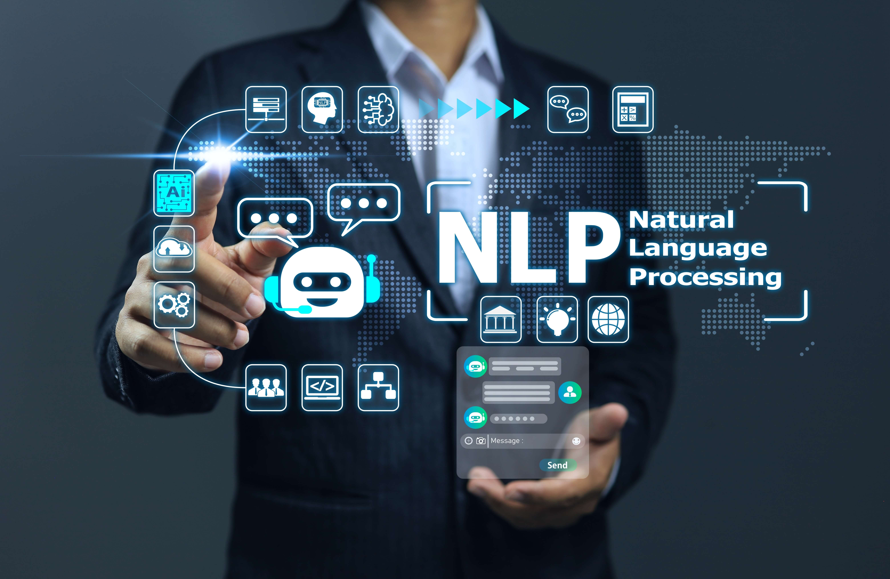
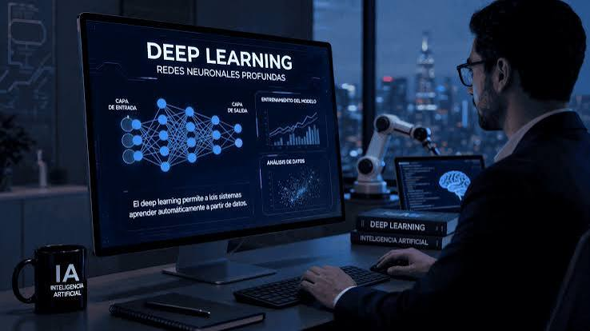

Master en Inteligencia Artificial
Diseña, entrena y despliega modelos de IA y prepárate para acceder a oportunidades reales en el sector tecnológico.
Domina las tecnologías que están transformando la forma de desarrollar soluciones digitales. Con el Máster en Inteligencia Artificial de Conquer Blocks aprenderás a diseñar, entrenar e implementar modelos inteligentes utilizando Python, Machine Learning, Deep Learning y redes neuronales. Una formación práctica y progresiva, orientada a proyectos reales, que te permitirá desarrollar sistemas basados en datos, automatizar procesos y adquirir competencias profesionales en uno de los campos más innovadores del sector tecnológico.
Empieza ahora ↗
Ventajas

Aprende a tu ritmo
Avanza sin renunciar a tu empleo actual. Nuestra metodología flexible te permite estudiar desde cualquier lugar y adaptar las clases a tus horarios para dominar la tecnología.

Proyectos prácticos
Durante el Master realizarás más de 10 proyectos prácticos que te servirán como curriculum y experiencia demostrable ante las empresas del sector.
Formación online
Nuestra academia es 100% Online, tendrás acceso por tiempo ilimitado al curso y contarás con el seguimiento, las tutorías y las clases en directo que imparte nuestro equipo.
Soporte Personalizado
No estarás solo en el proceso. Contarás con mentorías 1:1, profesores activos en la industria y nuestra comunidad en Discord para asegurar que nunca te estanques al aprender.
Desarrolla soluciones inteligentes con I.A
Especialízate en Inteligencia Artificial con una formación práctica y aplicada, guiada por profesionales activos en la industria.
La Inteligencia Artificial está transformando el mundo, y contar con el conocimiento adecuado es la clave para liderar el cambio. Con nuestro Máster en Inteligencia Artificial, aprenderás a crear sistemas inteligentes capaces de aprender, adaptarse y tomar decisiones. Desde el análisis de datos hasta el entrenamiento de modelos predictivos.
Skills & programas
Descubre las habilidades y competencias que desarrollarás a lo largo de tu formación. Con nuestro Master adquirirás las skills necesarias para destacar en el sector tecnológico


Plan de Estudio
Explora un temario completo, actualizado y orientado al mundo profesional, que combina teoría, práctica y proyectos reales. Avanza a tu ritmo, domina las tecnologías más demandadas y desarrolla las habilidades necesarias para impulsar tu futuro en el sector tecnológico.
Programación y Herramientas
01 Pseudocódigo
02 Linux y la Terminal
03 Python Inicial
04 Python Avanzado
05 SOLID y Bases de Datos
06 SQL
07 Google Antigravity
08 Automatizaciones y Agentes
09 SQL Avanzado
10 Git y Github
11 Streamlit
Machine Learning y redes neuronales
12 Teoría
13 PyTorch
Técnicas avanzadas de aprendizaje automático
14 Deep Learning
15 Computer Vision
Procesamiento del Lenguaje Natural
16 Natural Language Processing
Ampliación de conocimientos
17 Clases de Ampliación
Desarrollo profesional y proyecto final
18 Metodologías Ágiles y Scrum
19 Preparación de Entrevistas
20 Soft Skills
21 Propuestas Laborales
21 Proyecto Fin de Máster
Proyectos prácticos incluidos en el Master
En Conquer Blocks, aprender significa poner en práctica tus conocimientos desde el primer día. A través de proyectos reales y desafíos profesionales, desarrollarás habilidades técnicas, ganarás experiencia y construirás un portafolio que enriquecerá tu currículum y mejorará tus oportunidades laborales.

Modelo NLP: Asistente Virtual Inteligente
50+ horas entrenando modelos LLMs con Python y TensorFlow, optimizando el NLP y su despliegue en infraestructuras Cloud IA

Deep Learning: Motor de Análisis Predictivo
45+ horas diseñando redes neuronales con Keras y Python para procesar Big Data, logrando predicciones de alta precisión.